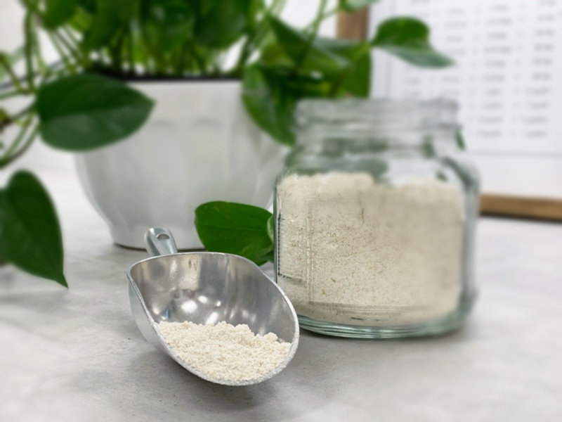
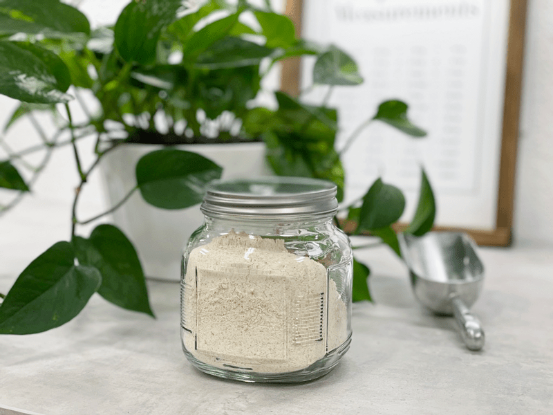

Oat Groat Flour – made from oat groat pulp
The other day I processed my dehydrated oat groat pulp into flour. I labeled the jar and left it on the counter. My mom later picked up the jar and looked at me… “Did you mean to write groat? What’s a groat? I thought you made flour?” She thought it was a misspelling or something (which for me is no surprise :) She hadn’t ever heard of a groat.

Groat Kernels!
A groat is another name for a grain kernel. Whole oat groats are the result of simply harvesting oats, cleaning them, and removing their inedible hulls. The groat is where all things oat come from. Steel-cut oats are oat groats chopped into 2-3 pieces.
Rolled oats (sometimes called old-fashioned oats) are created when oat groats are steamed and then rolled into flakes. (unless you can find a raw version which hasn’t been steamed).
And then we have instant oats… which are created by rolling the oat flakes thinner, and/or steam them longer.
So as you can see, oat groats are the whole grain form and the least processed, which means that they are far more nutritious, and the texture and taste are superior too.

Oats are Gluten-Free, but…
Oats do not contain gluten, but they are often grown alongside other gluten grains; therefore, many people with gluten intolerance cannot eat them. However, those with celiac disease can still enjoy oats as long as they are uncontaminated and certified gluten-free oats. Oats contain a protein called avenin, which can trigger an immune response similar to that of gluten in some people with celiac disease. Proceed with caution if gluten is an issue for you.
But let’s move on and talk about making oat flour from oat pulp. Oat pulp is the by-product of making oat groat milk (oat milk). If you are new to making oat milk, click (here) to learn how. Once you have created the oat milk, you will find yourself with a stash of oat pulp… that is when you want to come back to this posting. :) We are going to simply spread that pulp out on a dehydrator tray, dry it and then grind it to flour. Nothing goes to waste! You can make oat flour by processing the pulp after each session of making raw oat milk, or you can freeze the pulp until you accumulate a sufficient amount to process.
So this is what the process looks like: 1 cup raw oat groats = 1 3/4 cups dehydrated and once ground will equal 1 cup ground flour.
 Ingredients:
Ingredients:
Yields 1 cup flour
- 1 cup raw oat groats, make milk
Preparation:
- Press the oat pulp out onto the telfex sheet that comes with the dehydrator. If you don’t have those, use parchment paper instead. Don’t worry about making it all even and pretty… it will soon be ground into a flour.
- Dry at 145 degrees for 1 hour, then reduce to 115 degrees (F) for 4-6 hours or until dry. Allow it to come to room temp before grinding into a flour.
- Dry times are estimates. The time will vary depending on the climate, the machine you are using and how full it is, and how thick or thin you spread the pulp.
- Once dried and cooled, grind into a fine flour in the dry container that comes with thVitamixax, a spice grinder, a coffee grinder, or the Bullet.
- A food processor won’t get the flour really fine but can be used if that is all that you have.
- I recommend doing this in small batches so the blade can move the dried pulp chunks around freely.
- Because of its fat content, oat flour can go rancid. Store the remaining oat flour in the refrigerator or freezer and bring it to room temperature before using it.
Culinary Explanations:
- Why do I start the dehydrator at 145 degrees (F)? Click (here) to learn the reason behind this.
- When working with fresh ingredients, it is essential to taste test as you build a recipe. Learn why (here).
- Don’t own a dehydrator? Learn how to use your oven (here). I do, however honestly believe that it is a worthwhile investment. Click (here) to learn what I use.
© AmieSue.com